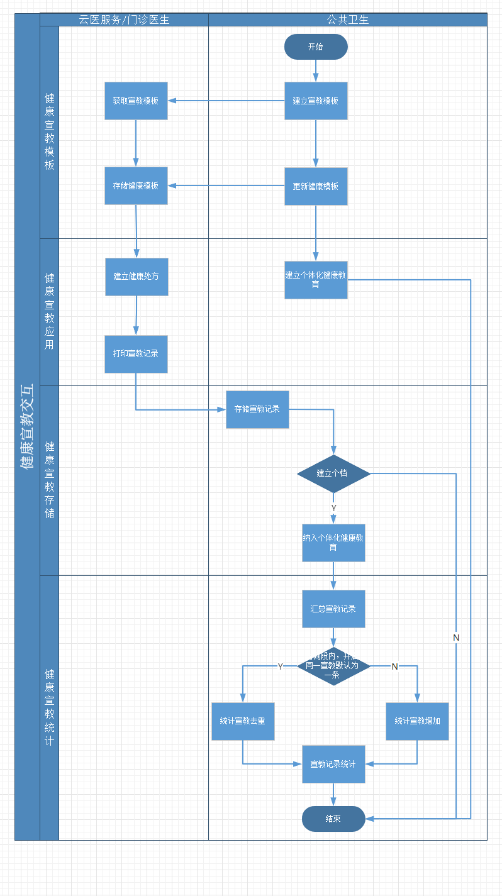

1.健康宣教模板的更新，采用实时更新，更新时需要进行通知
2.需要存储云医服务和门诊医生两类数据，当公卫系统需要使用时，将数据纳入公卫进行管理，统计时直接统计云医服务和门诊医生两类数据
3.因云医服务和门诊医生的数据，是直接存储在公卫系统，所以这里需要设计相应的数据丢失防护措施
4.统计页面统计的是数据是，云医和门诊传入的原始数据
5.统计时，如果有查看下级机构权限，那么数据统计时按照权限叠加配置进行统计，此处不计数据来源，当然如果数据来源筛选项，确定只用哪个，统计时就用哪个
